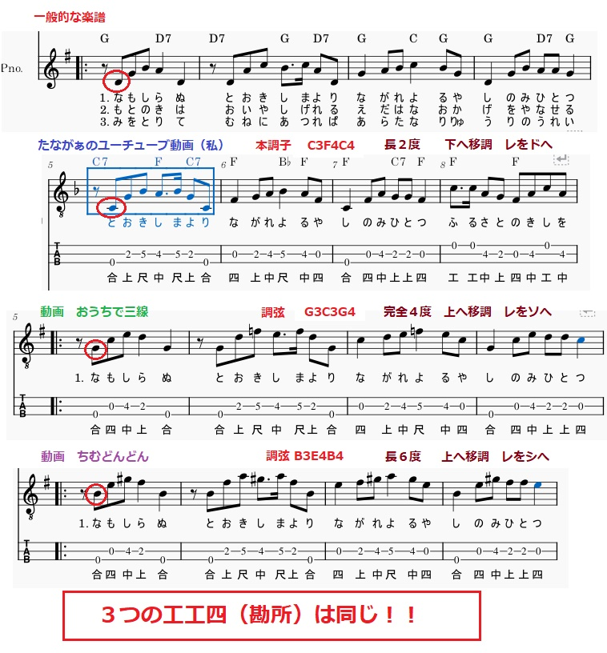

うるがいの話 ある日
最新: 調弦について【うるがいの話 ある日】とは 一日だけのプログです
『うるがいの話』の最新一日だけのプログで、通信料が少なく経済的だ。カニの画像をクリックすると全ての日付が載る『うるがいの話』サイトを表示します
|
|
【うるがいの話】 うるがい(ｳﾙｶﾞｲ urugai)とは、『もずくがに』の名前でとても大きくなります。 |
|---|---|
|
|
【カミマヤーの話】 猫のことを方言でマヤーといいます。カミマヤー（kamimayaa）とは、神の猫のことです。 |
|
【たながぁの音楽】 たながぁ（ﾀﾅｶﾞｰ tanagaa）とは手長えびのことで、何種類かあり大きいのは車 エビぐらいになります。 |

|
【ぶながぁの話】 ぶながぁ(ﾌﾞﾅｶﾞｰ bunagaa)とは、赤い髪の毛、赤い身体、そして身長は１ｍ２０ｃｍ ぐらい、川の蟹を食べているの目撃された。場所は沖縄県国頭郡大宜味村のと ある村僕の隣近所に住んでいる爺さんから、聞いた話です。 |
|
|
【ギーマの話】 ギーマ(giima)とは、山原の里山に咲くスズランに似た、 花を付けます。実は食べられます、 気が付くと口の周りが紫になっています。 |
2025年01月09日 (木）調弦について
15:46
ユーチューブ動画に調弦を教えてと書き込みがあった。フムフム、ま
たか、２度目である。調弦を可視化していない私が悪いのだが・・・
次回作から、対応しよう。

ついでに、小乗チャネルに『椰子の実』のユーチューブ動画を作成す
ることにした。ネットで楽譜を探していたら、ピアノの楽譜があった。
それを参考にしたのだが・・・、ピアノ特有のサビ（奢り）があるの
ですよ！、沢山楽譜みているとなんとなく分かる。ピアノ特有のサビ
のフレーズを使いたくないので、三線の動画を調べる。ほほう！、見
てよかった。これらの三線動画と違う工工四（勘所）で作るところだ
った。

皆さん、動画の内容がかぶらないようにしていますネ、調弦（移調）
で違いを出しているようです。でね、やはりスゴイですね、先輩達は
三線が弾きやすい、工工四（勘所）にしているのですよ。ウーン、私
も考慮してはいますが。なお、楽譜に近い音階は私です！、全ての工
工四を確認しているわけでないのですが、おそらく私と同じ音階のも
のが基本だと思う。
ギターは、ほぼ毎回調弦します。湿度に弦が、敏感に反応するので。
難儀ですよ、ところが三線は、湿度の変化に鈍いようです（最近演奏
してないが）、それと調弦、大変ですよ！！。とくに素人は、それと
曲の都度、調弦をするのは私はイヤです。と言うことで原則、本調子
で動画を作成している。
ユーチューブ動画は、曲に合わせシンプルな音色の構成にした。歌の
音色はハーモニカにして、三線はベース音、そして波の音で構成する。
ネットで三線の工工四（勘所）を調べると歌詞の音符である、それだ
とハーモニカとかぶるので、ピアノの楽譜を参考に、三線のベース版
の音符を作成した。波の音スゴイですね、ネットで探し応用しました。
『椰子の実 ハーモニカ 三線 波の音』
２分３５秒
https://youtu.be/s7BmpNnWHqU